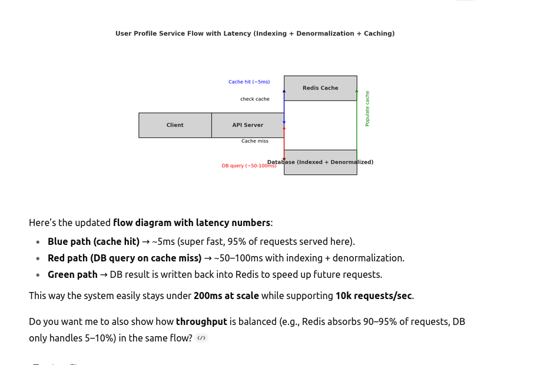

Indexing
Great — let’s unpack those three techniques (indexing, denormalization, and in-memory caches) since they’re fundamental to meeting latency and throughput SLAs in system design:
1. Indexing
- What it is: An index is a data structure (e.g., B-Tree, Hash Table) that speeds up queries by avoiding full table scans.
{Think of an index in a book. Instead of flipping through every page to find "Chapter 7", you just look at the index and jump directly there.In databases, an index is the same — it helps the computer quickly find the row you want instead of scanning everything.
- Good for: speeding up lookups..}
Example: Without an index:
SELECT * FROM users WHERE email = 'alice@example.com';→ The DB might scan millions of rows. With an index on
email: → Lookup becomesO(log n)instead ofO(n).System design implication:
- For low-latency APIs (e.g., user login), indexes ensure quick lookups.
- Too many indexes can hurt write performance (every insert/update must update indexes).
- Rule of thumb: Index read-heavy fields, but carefully balance with write overhead.
2. Denormalization
- What it is: Instead of normalizing data (splitting into multiple tables to avoid redundancy), denormalization duplicates data in strategic places to reduce joins and speed up reads.
{Think of writing someone’s phone number on multiple sticky notes instead of keeping it only in your phone. It’s duplicated, but now you can find it faster (no need to open your phone every time). In databases, denormalization means copying some data into multiple places so you don’t have to “join” tables every time.
- Good for: faster reads, especially when joins are slow.}
Example:
Normalized (good for storage, bad for read performance):
orders(order_id, user_id, product_id, date) users(user_id, name, email)→ To show an order with user name, you need a JOIN.
Denormalized:
orders(order_id, user_id, user_name, product_id, product_name, date)→ Query is faster since you avoid joins.
System design implication:
- Helps achieve low latency on reads (important for 95% <200ms goals).
- Increases write complexity (must update multiple places if user name changes).
- Common in NoSQL databases (MongoDB, Cassandra) where joins aren’t supported.
3. In-Memory Caches
- What it is: A high-speed storage layer (Redis, Memcached) that keeps hot data in RAM for microsecond access.
{Think of keeping your most-used apps on your phone’s home screen instead of searching through the whole phone every time. A cache is just a fast memory box (like Redis) that stores the most-used data so you don’t have to ask the database every time.
- Good for: super fast responses and handling lots of traffic.}
Types of caching:
- Read-through: If data isn’t in cache, fetch from DB and store it.
- Write-through: Write to cache and DB at the same time.
- Write-back (lazy): Write to cache first, DB later (riskier but faster).
Example:
- User profile service: Store
user_id → profilein Redis. - 95% of requests can return in <1ms instead of ~100ms DB query.
- User profile service: Store
System design implication:
Critical for meeting high throughput (10k RPS) while keeping DB load manageable.
Requires cache invalidation strategy:
- TTL (time-to-live) for freshness.
- Explicit invalidation on updates.
🔑 Putting it all together:
- Indexing: Great for structured queries on relational DBs where strong consistency is needed.
- Denormalization: Reduces query complexity and latency, especially in distributed or NoSQL environments.
- Caching: Handles scale and speed, offloading DBs for high throughput.
✅ Typically, all three are used together:
- Use indexes for critical DB queries.
- Denormalize where joins are too expensive.
- Add a caching layer (Redis, CDN, application cache) for the hottest paths.
Do you want me to illustrate with a concrete flow (e.g., a user profile service showing how indexing, denormalization, and caching work together to hit 200ms latency at 10k RPS)?
Perfect 👍 let’s walk through a concrete flow with a simple but realistic example:
🎯 Example: User Profile Service
Requirements:
- Latency: 95% of requests <200ms
- Throughput: 10k requests/sec sustained
📍 Step 1: Base Setup (Relational DB Only)
We start with a relational DB (say PostgreSQL) storing user profiles:
users(
user_id BIGINT PRIMARY KEY,
email VARCHAR UNIQUE,
name VARCHAR,
bio TEXT,
profile_pic_url TEXT
)
Flow:
A client requests GET /users/12345.
API server queries DB:
SELECT * FROM users WHERE user_id = 12345;DB scans/uses primary key → returns result.
⚠️ Problem: If 10k RPS hit the DB, it will struggle. Some queries may take >200ms.
📍 Step 2: Indexing
We add indexes to speed up lookups (besides PK, maybe by email too).
CREATE INDEX idx_users_email ON users(email);
Flow:
Now login requests like:
SELECT * FROM users WHERE email = 'alice@example.com';→ Fast lookup due to index.
✅ Helps latency (<50ms per query). ⚠️ But DB still bottleneck at high throughput (10k RPS).
📍 Step 3: Denormalization
Suppose we also need to show user profile with last 3 posts.
Normalized design:
users(user_id, name, bio, pic) posts(post_id, user_id, content, created_at)→ Needs a JOIN:
SELECT u.name, u.bio, p.content FROM users u JOIN posts p ON u.user_id = p.user_id WHERE u.user_id = 12345 ORDER BY p.created_at DESC LIMIT 3;Denormalized design:
user_profiles( user_id, name, bio, pic, recent_posts JSON )→ No join needed. Just fetch one row.
✅ Query much faster (1 table, no join).
⚠️ Slightly harder writes (when a user posts, update recent_posts).
📍 Step 4: Caching (Redis)
Now we add Redis in front of the DB.
Flow:
Client requests GET /users/12345.
API checks Redis cache first:
- If found (cache hit): return in <5ms.
- If not (cache miss): fetch from DB (50–100ms), store result in Redis for next time.
Cache strategies:
- TTL (e.g., 5 min) → refreshes periodically.
- Write-through → whenever user updates profile, update Redis immediately.
✅ DB now handles only cache misses. ✅ Redis easily handles >100k RPS at microsecond latency. 🚀 Now system easily supports 10k RPS with p95 <200ms.
📍 Final Flow Diagram (Simplified)
Client → API → [Redis Cache] → (DB if cache miss)
- Indexing → DB queries fast.
- Denormalization → avoid joins, fewer queries.
- Caching → absorb heavy traffic and ensure sub-ms latency for hot data.
✅ Result:
- Latency SLA (95% <200ms): met because Redis returns in <5ms for most requests.
- Throughput SLA (10k RPS): met because DB load is reduced (Redis handles most).
Would you like me to draw this architecture flow in a diagram (showing API → Cache → DB → Denormalized tables)? That could make it visually easier to follow.

Redis Cache: Handles ~90–95% of requests (the cache hit rate).
Latency: ~5ms.
This is where the bulk of the 10k requests/sec go, so Redis absorbs ~9,000–9,500 RPS.
Database (with indexing + denormalization): Handles only ~5–10% of requests (cache misses).
Latency: ~50–100ms per query.
That means the DB only processes ~500–1,000 RPS instead of 10k RPS, which is manageable.
API Server: Orchestrates between cache and DB.
Most requests return quickly via Redis.
Only a small fraction go to the DB, and those results are written back to Redis for next time.
👉 This way, the system meets both:
Throughput SLA (10k RPS) → because Redis offloads the DB.
Latency SLA (95% <200ms) → because 95%+ requests come back from cache in ~5ms.
Yes 👍 — which technique you prefer (indexing, denormalization, or caching) depends on the type of database you’re using and the use case. Here’s a simple comparison table:
📊 Which technique fits which database?
| Database Type | Indexing | Denormalization | Caching |
|---|---|---|---|
| Relational DB (MySQL, PostgreSQL, Oracle, SQL Server) | ✅ Very useful (B-Tree, Hash, GIN indexes). Speeds up SELECT queries. | ⚠️ Less common (normalization is preferred), but sometimes used for performance (e.g., store user name inside orders to avoid joins). |
✅ Often needed to offload heavy queries (Redis + DB combo is common). |
| Document DB (MongoDB, CouchDB) | ✅ Supports indexes (on fields, compound indexes). Needed for fast lookups. | ✅ Very common → documents are naturally denormalized (embed user + address info directly in order doc). | ✅ MongoDB + Redis is common for very hot data. |
| Key-Value Store (Redis, DynamoDB, Memcached) | ❌ Not much needed → direct key lookups are already fast. | ✅ Sometimes (duplicate data across keys for faster access). | 🚫 Already a cache (Redis/Memcached itself is the cache). |
| Columnar DB (Cassandra, HBase, ScyllaDB) | ✅ Supports partition keys + clustering columns (acts like indexing). | ✅ Very common → design tables around query patterns (duplicate data for fast reads). | ✅ Can still use Redis/CDN on top if traffic is very high. |
| Search DB (Elasticsearch, Solr, OpenSearch) | ✅ Built around indexing (inverted index for text search). | ❌ Not usually needed (search engine already optimized). | ✅ Can still cache search queries for popular keywords. |
| Time-Series DB (InfluxDB, TimescaleDB, Prometheus) | ✅ Index on time + tags for fast queries. | ❌ Rarely used (data is append-only). | ✅ Good for dashboards → cache most recent data. |
🔑 Key Takeaways
- Relational DBs → rely heavily on indexing, sometimes use denormalization, and almost always benefit from caching.
- NoSQL DBs (Document/Columnar) → rely heavily on denormalization (store data in query-friendly shapes), plus caching for speed.
- Key-Value Stores → already fast, act as caches themselves.
- Search & Time-Series DBs → rely on specialized indexing, with optional caching for popular queries.
👉 Would you like me to also make a real-world mapping (e.g., “if you’re using MySQL → prefer indexing + cache, if MongoDB → prefer denormalization + cache”) so you have a quick decision guide?